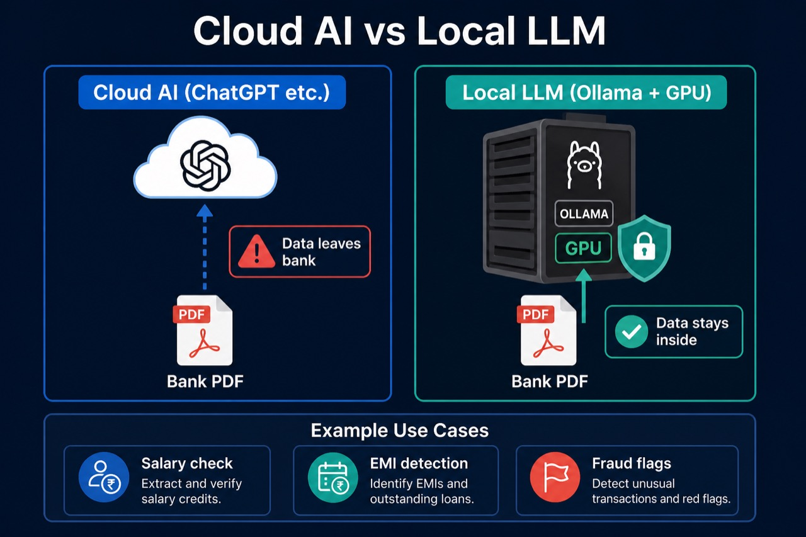
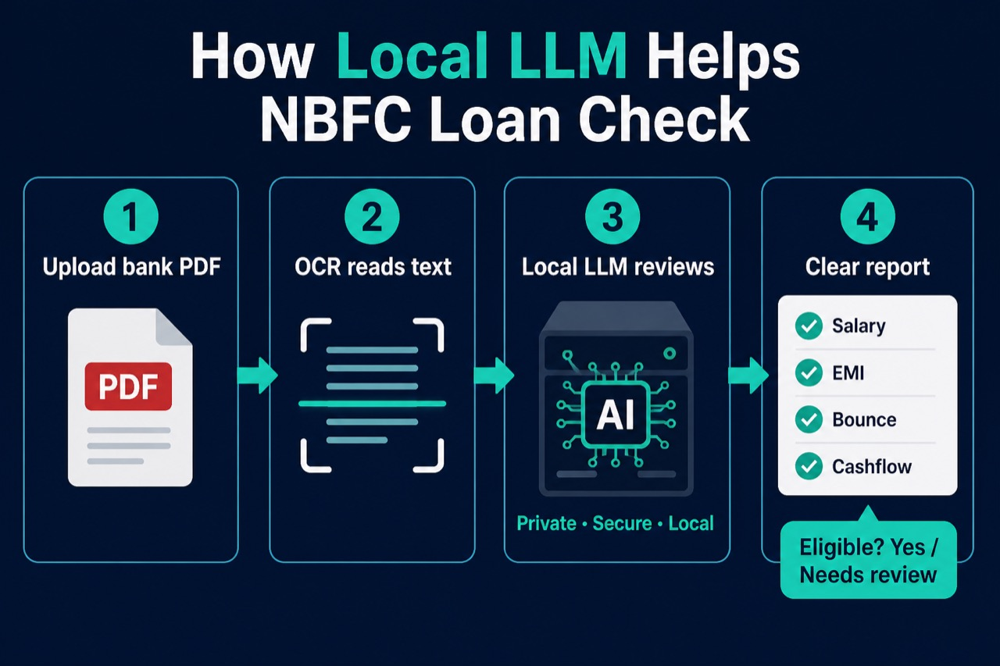

Quick answer: A local LLM for banks & NBFCs is AI that runs on your own server. It can read bank statements and loan files without sending customer data to public cloud chat tools.
Banks and NBFCs cannot casually paste customer PDFs into ChatGPT. A local LLM solves that: same style of AI help, but the data stays private.
What Is a Local LLM? (One Simple Line)
Local LLM = Large Language Model that runs on your computer or private server (often with Ollama), not on someone else's cloud.
- Local — inside your office / data center
- LLM — AI that reads and writes language (summaries, answers, flags)
- For banks / NBFCs — used on statements, KYC text, and loan documents
Cloud AI vs Local LLM — Easy Picture

- Cloud AI — fast to try, but text may leave your company
- Local LLM — more setup, but better for privacy and compliance
Why Banks & NBFCs Prefer Local LLM
- Privacy — account numbers, salary, and EMI details stay private
- Control — you choose the model, logs, and access rules
- Cost at scale — many PDFs per day can be cheaper on your own GPU than per-API fees
- Offline / private network — works inside bank firewalls
Real Examples (Very Simple)
Here is what a local LLM can do in banking work:
- Salary check — “Find monthly salary credits in this HDFC statement.”
- EMI detection — “List EMI debits and the lender names.”
- Bounce flags — “Show cheque bounce or auto-debit failure charges.”
- Cashflow summary — “In 5 bullets, is cashflow stable for a personal loan?”
- Multi-bank compare — “Compare SBI + ICICI statements for the same person.”
- Hinglish help — Credit officer asks: “Is salary regular last 6 months?” — AI answers from the PDF text.
How Local LLM Helps an NBFC Loan Check

- Upload bank statement PDF / Excel
- System extracts text (and OCR if the PDF is a scan)
- Local LLM reviews transactions on a private GPU server
- Team gets a clear report: salary, EMI, bounce, cashflow, risk notes
This is the same idea used in production bank-statement AI — see the Ollama + NVIDIA GPU case study and the NBFC platform series.
Local LLM Tools You Will Hear About
- Ollama — easy way to run open models on your server
- NVIDIA GPU — makes batch PDF review much faster
- Ray — runs many statement jobs in parallel
- Open models — Llama, Mistral, Qwen, and similar (run privately)
Local LLM Is Not Magic — Important Limits
- It can miss or guess wrong — humans still decide loans
- Scanned PDFs need good OCR / PDF reading first
- You still need clear rules for fraud, eligibility, and audit logs
Key Takeaways
- Local LLM = AI that runs on your own server.
- Best fit for banks & NBFCs when customer documents must stay private.
- Common uses: salary, EMI, bounce, cashflow, and loan underwriting support.
- Often run with Ollama + NVIDIA GPU for speed.
- It helps officers decide faster — it does not replace credit policy.
Related Guides
- What Is Ollama? — run AI on your own computer
- Bank Statement Analysis with Ollama GPU — production case study
- NBFC Part 2: AI, Chat & Reports
- What Is an LLM? — basics in simple words
Need a private local LLM setup for bank statements or NBFC underwriting? I build this in production.
Get in Touch What Is Ollama? GPU Case Study